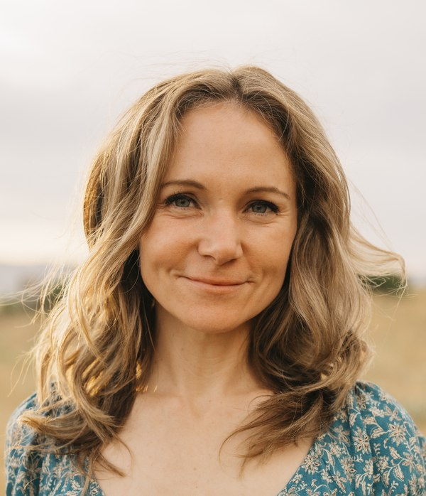

Sara A. Sutherland
Lecturer, Dept. of Agricultural & Resource Economics, UC Davis
I am a lecturer in the Department of Agricultural and Resource Economics at UC Davis and a Senior Research Fellow at the Property and Environment Research Center, where I co-direct the Lone Mountain Fellow Program. I conduct research on the political economy of natural resource policy and regional economics. My focus has been on the economics of communities reliant on fisheries, water resources, and national parks and forests.
Positions
- Lecturer, Department of Agricultural and Resource Economics, University of California, Davis, 2024–Present
- Lecturer (with faculty appointment), Sanford School of Public Policy, Duke University, 2020–2023
- Teaching Assistant Professor, Dept. of Agricultural and Resource Economics, North Carolina State University, 2018–2020
- Clinical Assistant Professor, Dept. of Applied Economics, Utah State University, 2016–2018
Other Positions & Affiliations
- External Research Coordinator, Fellowship Director, and Senior Research Fellow, Property & Environment Research Center, 2022–present
- Policy Concentration Advisor, Environment and Energy Policy, Duke University, 2023
- Faculty Affiliate, Center for Environmental and Resource Economic Policy, NC State University, 2018–present
Education
- Ph.D., Environmental Science and Management, University of California, Santa Barbara, 2016 — fields: environmental & natural resource economics and econometrics
- M.A., Economics, University of California, Santa Barbara, 2010
- B.S., Psychology, Michigan State University, 2009